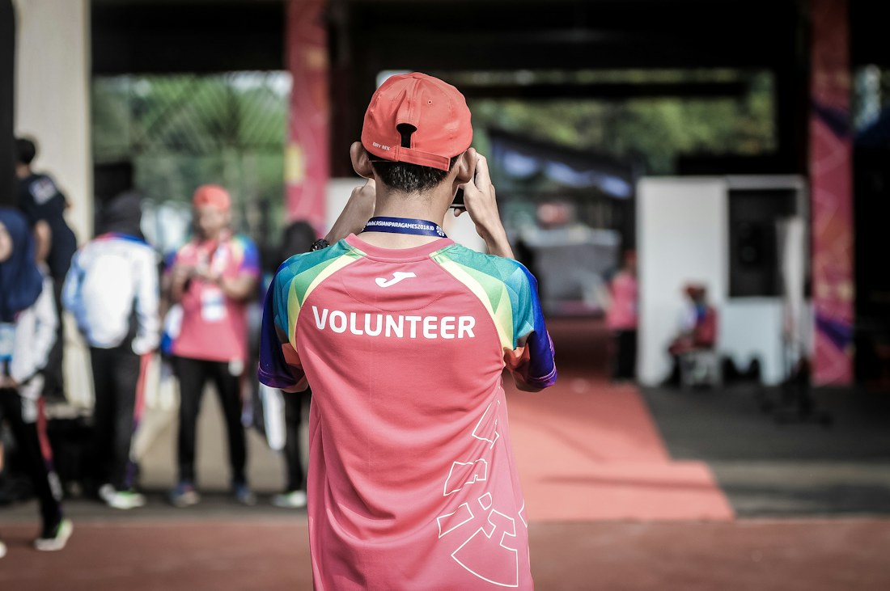
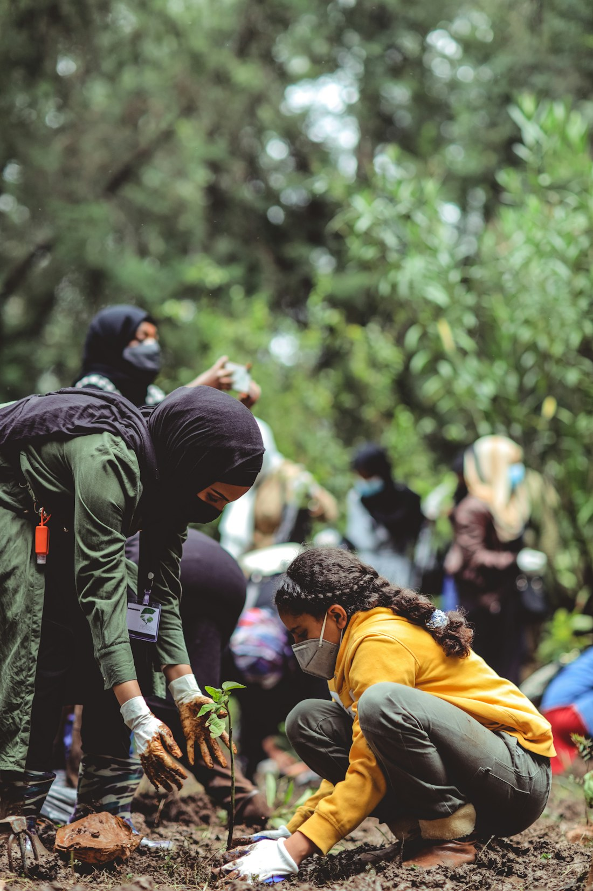

Aprender para ir além
Aprender abre caminhos
Leitura, troca de conhecimentos e oportunidades para desenvolver novos caminhos.
Conhecer a propostaPessoas no centro. Esperança em movimento.
Acolher, incluir e abrir caminhos. Uma proposta que conecta pessoas a um futuro com mais oportunidades.
Pequenos gestos. Novas possibilidades.
Educação que abre portas
Inclusão que aproxima
Cuidado que transforma
Nossa razão de existir
Acreditamos na força de uma comunidade que cuida de quem faz parte dela.
O Instituto Esperança é uma proposta de organização social que reúne educação, inclusão e consciência ambiental para apoiar pessoas e famílias em situação de vulnerabilidade.
Conheça a nossa essênciaCaminhos de transformação
Conheça algumas das iniciativas propostas para aproximar pessoas e oportunidades.
Leitura, troca de conhecimentos e oportunidades para desenvolver novos caminhos.
Conhecer a proposta
AcolhimentoEscuta e informação para mães solo, crianças e famílias que precisam de apoio.
Conhecer a proposta
SustentabilidadeEducação ambiental para cultivar hábitos mais conscientes dentro e fora de casa.
Conhecer a propostaSeu lugar nessa história
Tempo, conhecimento, parceria. Cada contribuição pode aproximar uma ideia de quem precisa dela.
Descubra como participarConfiança se constrói com clareza
Nosso compromisso é compartilhar informações claras sobre as iniciativas e apresentar resultados com dados verificados.
Entenda nosso compromissoPara ver, ouvir e se inspirar
Vamos construir juntos?